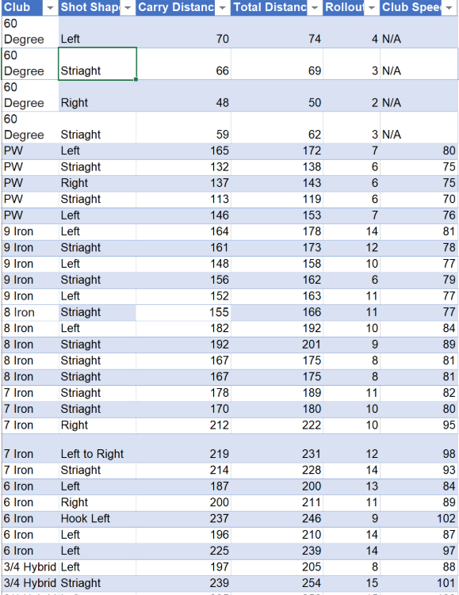

Excel Golf Tracker
Project Overview
As an avid golfer and a data professional I decided to combine two of my passions. While having some fun and gaining insights about traits of my golfing abilities, The purpose of this project was to find my average distance travel and the tendencies of the flight path of my shots categorized mainly by individual club
Data Trasforming and Cleaning:
The only transforming of the data was manipulating the table to access given fields and measures to create rows and columns for my pivot table to extract KPIs from my data Data cleaning that was implemented consisted of making sure the entries in the shot direction field were in proper form, by using using the "Proper()" function in Excel while creating my table The main reason for this is that I didn't want issues while grouping the fields in the pivot tables ensuring uniformity between entries
Data Visualization:
This is my dashboard for my golf data Tracker:
Summary of findings:

The key findings within this data are the tendencies of my shot shapes
- It was found that for all my clubs my main shot direction was mainly straight, with 38% of my shouts going straight
- 35% of my shots are going in the left direction
- It can be assumed that if I don't change anything with my shot there is just over a 70% chance the ball will go straight or left
- Furthermore when I use my irons 85% of the time my shot will go left or straight
- With my longer clubs such as my driver, hybrids, and fairway woods the distribution is a lot more even seeing around a 20% split of all directions
Data Overview
- This data is essential to enhance golfing for me now that I know what clubs to use for a given distance and what shot direction I tend to hit towards
- concluding the findings that I may have to weaken my grip on the club to hit more shots straight
- In the future, I am looking to implement some analytics to compare my shot speed and distances to the PGA Tour Professionals and see the difference between our shot distances and club speed
- I am also looking to include a function to calculate how far the ball will go based on the club speed, ball spin rate, and other key measures. I believe this forecasting algorithm can be achieved by linear regression in tandem with python.
- I'm looking forward to adding to this data set and watching the change in trend throughout the coming months